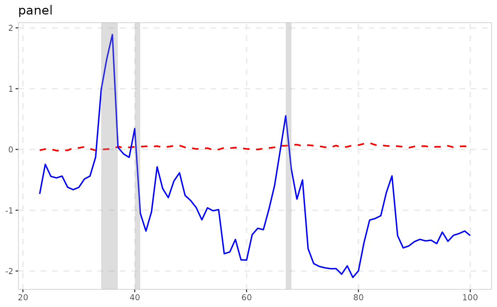

radf_sb_cv computes critical values for the panel recursive unit root test using
the sieve bootstrap procedure outlined in Pavlidis et al. (2016). radf_sb_distr
computes the distribution.
Arguments
- data
A univariate or multivariate numeric time series object, a numeric vector or matrix, or a data.frame. A column may have leading and/or trailing
NAvalues (an uneven/unbalanced panel where series enter or exit the sample at different times) – those periods are filled withNAinbadf/bsadfand excluded from that series'adf/sadf/gsadf. InteriorNAvalues (a gap in the middle of a series) are not supported. When any series is padded this way, the panel statistic (bsadf_panel/gsadf_panel) is not available and is returned asNA, with a warning.- minw
A positive integer. The minimum window size (default = \((0.01 + 1.8/\sqrt(T))T\), where T denotes the sample size).
- lag
A non-negative integer. The lag length of the Augmented Dickey-Fuller regression (default = 0L).
- nboot
A positive integer. Number of bootstraps (default = 500L).
- type
Lag-order selection:
"fixed"(default) useslagas given, matchingradf's own single-lagbehaviour."aic"/"bic"instead select the lag automatically per series vialag_select()(internal; taking the max across the panel, since the rest of this function assumes one common lag order) – Pedersen & Schütte (2020)'s fix for the size distortion a fixed lag causes under autocorrelated innovations.- max_lag
Maximum lag order to search over when
typeis"aic"/"bic". Ignored whentype = "fixed".- seed
An object specifying if and how the random number generator (rng) should be initialized. Either NULL or an integer will be used in a call to
set.seedbefore simulation. If set, the value is saved as "seed" attribute of the returned value. The default, NULL, will not change rng state, and return .Random.seed as the "seed" attribute. Results are reproducible across the parallel and non-parallel option when the same seed is used.
Value
For radf_sb_cv A list A list that contains the critical values
for the panel BSADF and panel GSADF test statistics. For radf_wb_dist a numeric vector
that contains the distribution of the panel GSADF statistic.
References
Pavlidis, E., Yusupova, A., Paya, I., Peel, D., Martínez-García, E., Mack, A., & Grossman, V. (2016). Episodes of exuberance in housing markets: In search of the smoking gun. The Journal of Real Estate Finance and Economics, 53(4), 419-449.
Pedersen, T. Q., & Schütte, E. C. M. (2020). Testing for explosive bubbles in the presence of autocorrelated innovations. Journal of Empirical Finance, 58, 207-225.
See also
radf_mc_cv for Monte Carlo critical values and
radf_wb_cv for wild Bootstrap critical values
Examples
# \donttest{
rsim_data <- radf(sim_data, lag = 1)
# Critical vales should have the same lag length with \code{radf()}
sb <- radf_sb_cv(sim_data, lag = 1)
tidy(sb)
#> # A tibble: 3 × 3
#> id sig gsadf_panel
#> <fct> <fct> <dbl>
#> 1 panel 90 0.333
#> 2 panel 95 0.435
#> 3 panel 99 0.646
summary(rsim_data, cv = sb)
#>
#> ── Summary (minw = 19, lag = 1) ─────────────── Sieve Bootstrap (nboot = 500) ──
#>
#> panel :
#> # A tibble: 1 × 5
#> stat tstat `90` `95` `99`
#> <fct> <dbl> <dbl> <dbl> <dbl>
#> 1 gsadf_panel 1.89 0.333 0.435 0.646
#>
autoplot(rsim_data, cv = sb)

# Simulate distribution
sdist <- radf_sb_distr(sim_data, lag = 1, nboot = 1000)
autoplot(sdist)
# Automatic BIC lag selection instead of a fixed lag
sb_bic <- radf_sb_cv(sim_data, type = "bic")
# }